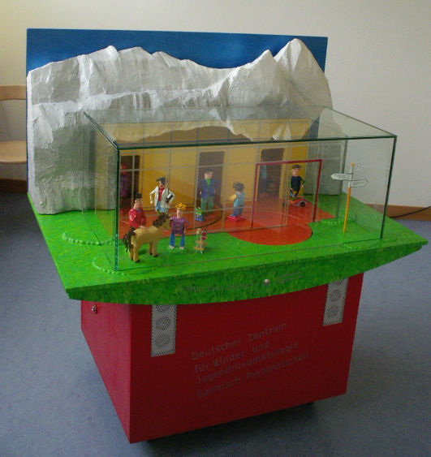

Ein einfaches Memory-Spiel geschrieben in Perl mit GTK2.
Ein "Pet Project": Ein einfacher Vokabeltrainer geschrieben in Perl und GTK2 bzw. ncurses. Das Projekt hat mir einerseits geholfen, Vokabeln und Programmieren zu lernen.
Modell für die Kinderklinik Garmisch-Partenkirchen

Zusammen mit Mitschülern haben wir für die Kinderklinik Garmisch-Partenkirchen ein Modell gebaut, das kindgerecht das Therapiekonzept erklären sollte. Ich habe mich um die Elektronik gekümmert: Ansteuerung der Schrittmotoren, Auswertung der Lichtschranken, Steuerung des MP3-Players...
Im Rahmen eines Wettbewerbs des Linux-Magazins sollte eine Variante des Monty Hall Dilemmas (auch bekannt als Ziegenproblem) in Perl implementiert werden. Allerdings war es das Ziel, dies in möglichst wenig Schlägen zu erreichen – also mit möglichst wenig Zeichen Perl-Code. Gewonnen habe ich leider nicht, aber zumindest war meine Lösung richtig und ich bin im hinteren Mittelfeld gelandet. Und meine Ausgabe war sogar formatiert... :)
PyWatermark ist ein mit Python und GTK geschriebenes Programm, das Bilder mit einem sichtbaren Wasserzeichen versieht.
Der Octopus ist eine Hardware-Schaltung, die viele Schnittstellen (I/O, UART, I2C...) eines ATMEGAs per USB zur Verfügung stellt. Die Octopus-API ist für viele Sprachen (u.a. C, C++, Java, Python) verfügbar.
Entwickelt hat die Schaltung Benedikt Sauter, der auch den aller größten Teil der Firmware und Software dafür geschrieben hat.
Die Hardware kann man sich auch fertig kaufen.
OpenKubus ist ein einfacher Sicherheits-USB-Stick. Erkannt wird er vom Betriebssystem als USB-Tastatur, daher sind keine zusätzlichen Treiber notwendig. Auf Knopfdruck gibt der Stick ein One-Time-Pad aus, das zur Authentifizierung genutzt werden kann.
Wenn ich mal Zeit und Lust finde, dann schreibe ich eine GUI zum verwalten von Sticks und dokumentiere die Einrichtung besser. Hilfe gerne erwünscht! :)
Drink and Blow – Alkoholtester im Eigenbau (work in progress)
Auf dem 10. LUG-Camp 2009 hab ich die erste Version meines Alkoholtesters vorgestellt. Obwohl in mancher Hinsicht etwas naiv und einfach gebaut, hat er doch gute Ergebnise geliefert. Die zweite Version soll aber noch genauer werden.